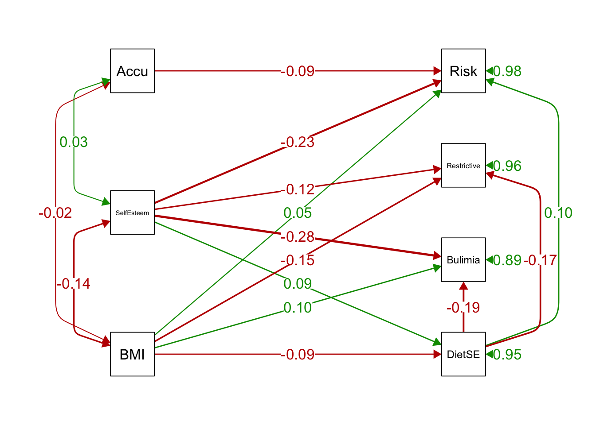

Chapter 3 Lavaan Lab 1: Path Analysis Model
In this lab, we will learn how to:
- install a package called lavaan in R
- perform path analysis using the lavaan package
3.1 Reading-In and Working With Realistic Datasets In R
3.1.0.1 To begin, we will read the file that we will use for our SEM lab (eatingDisorderSimData.csv).
Try running this function, as written:
file.choose()Using the GUI (graphical user interface) window that pops up, select the file eatingDisorderSimData.csv
This should produce a file path like this (note: below is a Mac version):
/Your/File/Path/eatingDisorderSimData.csvYou can copy this path into the read.csv and put it in the file = argument of the function:
- read.csv() is a function for reading in .csv files.
- Assign the name labData to the dataset in R using <-
labData <- read.csv(file = "/Users/gejiang/Box Sync/MacSync/Teaching/590SEM/Spring 2022/Week 4/R/eatingDisorderSimData.csv", header = TRUE)Important Argument: header =
- if header = TRUE, indicates that your dataset has column names that are to be read in separate from the data.
- if header = FALSE, indicates that your dataset does NOT have column names, and therefore the first row of the dataset should be read as data.
3.1.0.2 Or you could NEST the file.choose() function inside the read.csv function
labData <- read.csv(file = file.choose(), header = T)Because file.choose() returns the file path, putting this inside the read.csv function is the same as writing the path inside the function!
3.1.0.3 Pros and Cons of writing the full file path vs. using read.csv(file = file.choose(), header = T)
If you write down the full file path and put it in the function, then the next time you run this R script you can easily read in your data without searching through your directories and folders.
However, if you move your file to a different folder in the future, you’ll need to change the directory path in your R script.
file.choose() is very easy and user-friendly.
Using this method allows you to find your datafile even if you’ve moved it to a different folder.
However, it is slightly more effortful to go in and select your folder each time.
3.1.0.4 Gabriella recommends:
Set your working directory to the directory that contains the dataset, and simply load your data by typing the name of the .csv file:
setwd("~/Box Sync/MacSync/Teaching/590SEM/Spring 2022/Week 4/R")
labData <- read.csv(file = "eatingDisorderSimData.csv", header = T, sep = ",")This serves to save all your future analyses in your working directory.
read.csv() is related to a broader function called read.table.
The read.table function has a sep = argument sep =
- If sep = “,” this indicates a comma-separated (.csv) file
- If sep = ” ” this indicates a tab-delimited (“white space” delimited) file, such as a .txt
3.2 Sample Covariance Matrices using the cov() function
3.2.0.1 Quick review:
str(labData) #structure## 'data.frame': 1339 obs. of 7 variables:
## $ BMI : num 0.377 0.302 -1.098 -1.13 -2.797 ...
## $ SelfEsteem : num 0.0685 -0.3059 1.4755 -0.1329 1.3538 ...
## $ Accu : num 1.782 0.491 -0.682 2.224 0.892 ...
## $ DietSE : num -0.0544 -2.3957 0.168 1.1851 0.5131 ...
## $ Restrictive: num -0.525 2.067 0.364 -1.656 0.743 ...
## $ Bulimia : num 0.432 0.196 -1.434 -0.675 -0.858 ...
## $ Risk : num 0.508 0.91 -0.777 -0.554 -0.314 ...head(labData) #first few lines## BMI SelfEsteem Accu DietSE Restrictive Bulimia Risk
## 1 0.3769721 0.0685226 1.7822103 -0.05436952 -0.5251424 0.4322272 0.50794715
## 2 0.3015484 -0.3058876 0.4909857 -2.39569010 2.0671867 0.1959765 0.90996098
## 3 -1.0980232 1.4754543 -0.6819827 0.16801384 0.3638750 -1.4337656 -0.77678045
## 4 -1.1304059 -0.1329290 2.2235223 1.18505959 -1.6557519 -0.6748446 -0.55411733
## 5 -2.7965343 1.3537804 0.8922687 0.51311551 0.7431860 -0.8575733 -0.31385631
## 6 0.7205735 -1.9361462 -1.0307704 0.79749119 -1.8609143 0.3290163 0.08012833colnames(labData) #column names## [1] "BMI" "SelfEsteem" "Accu" "DietSE" "Restrictive" "Bulimia" "Risk"- How many observations are in this dataset?
- Number of observations = number of rows, with 1 person per row
nrow(labData) #1339## [1] 1339let’s save this number as n
n <- nrow(labData)Let’s look at the sample covariance matrix of these variables using the cov() function:
cov(labData)## BMI SelfEsteem Accu DietSE Restrictive Bulimia Risk
## BMI 1.07399214 -0.1380786 -0.02076620 -0.10688665 -0.13056197 0.16177119 0.07938074
## SelfEsteem -0.13807862 1.0021547 0.03501750 0.10557111 -0.11991676 -0.31717764 -0.22864713
## Accu -0.02076620 0.0350175 0.97176431 -0.02069863 -0.09050653 -0.09549788 -0.10327073
## DietSE -0.10688665 0.1055711 -0.02069863 0.96607293 -0.15678475 -0.21922044 0.07119772
## Restrictive -0.13056197 -0.1199168 -0.09050653 -0.15678475 1.01695732 0.58684522 0.78960193
## Bulimia 0.16177119 -0.3171776 -0.09549788 -0.21922044 0.58684522 1.03637890 0.87337921
## Risk 0.07938074 -0.2286471 -0.10327073 0.07119772 0.78960193 0.87337921 1.05356717let’s save this sample cov as capital S:
S = cov(labData)If we wanted, we could look at a subset of the dataset, e.g.,:
cov(labData[,c("BMI", "SelfEsteem", "Accu")])## BMI SelfEsteem Accu
## BMI 1.0739921 -0.1380786 -0.0207662
## SelfEsteem -0.1380786 1.0021547 0.0350175
## Accu -0.0207662 0.0350175 0.9717643This is often useful if our analysis will only contain certain variables.
If only two variables:
cov(labData$BMI, labData$SelfEsteem)## [1] -0.1380786If only one variable (variance):
cov(labData$BMI, labData$BMI)## [1] 1.0739923.3 Installing Packages
We will mostly be using the lavaan package to perform SEM analyses, so let’s use the install.packages() function to install it first
install.packages("lavaan")lavaan stands for LAtent VAriable ANalysis using R.
lavaan website: http://lavaan.ugent.be
Check out the tutorials and examples!
3.4 Loading Packages (Libraries) That You Have Installed
AFTER YOU’VE INSTALLED A PACKAGE ONE TIME, YOU DON’T HAVE TO EVER INSTALL IT AGAIN, UNLESS YOU DELETE AND REINSTALL R FOR SOME REASON.
HOWEVER, NOW THAT THESE FUNCTIONS ARE INSTALLED IN R ON YOUR MACHINE, YOU MUST LOAD THE LIBRARY EVERY TIME YOU OPEN R AND WISH TO USE IT.
To do this, use the library() function:
library(lavaan)This is lavaan 0.6-9 lavaan is FREE software! Please report any bugs.
Don’t worry about the “BETA” warning, this package is awesome!
This may seem like a pain, but roll with it. The good news is that once you do it, you have access to a whole library of SEM functions.
If you boot up R and receive error msgs like “could not find function”sem”” IT IS PROBABLY BECAUSE YOU HAVEN’T LOADED THE lavaan PACKAGE.
Check out the help page of a particular function, say sem():
help(sem)
?sem3.5 Using Lavaan For Path Models
Every analysis in lavaan has three main parts.
- Part I: Writing the Model Syntax
- Part II: Analyzing the Model Using Your Dataset
- Part III: Examining the results.
3.5.1 PART I: Follow the set of equations we wrote in class:
Self-Efficacy = BMI + Self-Esteem + Disturbance
Bulimic Symptoms = BMI + Self-Esteem + Self-Efficacy + Disturbance
Restrictive Symptoms = BMI + Self-Esteem + Self-Efficacy + Disturbance
Overall Risk = BMI + Self-Esteem + Self-Efficacy + Acculturation + Disturbance
Let’s write some model syntax:
ex1PathSyntax <- " #opening a quote
# Tilda ~ : Regression
# M ~ X regression (X predicts M)
# Each line corresponds to an equation
# Disturbance is automatically included for each regression
# (i.e. no extra term needed)
DietSE ~ BMI + SelfEsteem #DietSE is predicted by BMI and SelfEsteem
Bulimia ~ DietSE + BMI + SelfEsteem
Restrictive ~ DietSE + BMI + SelfEsteem
Risk ~ DietSE + BMI + SelfEsteem + Accu
" Things to note here:
- We are calling our saved model syntax object ex1PathSyntax
- We assign it using <- as usual
- Then we open a quotation ”
- Then we write each part of the model on separate lines.
- Then we close the quotation ”
- The variables names need to match those in the dataset (case matters!)
- Add comments inside the model syntax using hashtag
3.5.2 PART II Let’s run our model!
To run this model, we will start by using the sem() function.
Sensible defaults for estimating CFA models like assumptions of linear regression, so we don’t actually have to write some constraints into the model above
Alternatively, one can use lavaan() function [with the fewest default settings] or cfa() function [with similar defaults as sem() function]
To use lavaan(), you have to specify all 22 parameters in the model.
3.5.2.1 ex1fit
You can run the sem() function using two different sources of data:
- The raw dataset, using:
lavaan::sem(model = modelSyntax, data = yourDataset)example:
ex1fit <- lavaan::sem(model = ex1PathSyntax, data = labData)If you encounter errors like:
Error in if ((!is.matrix(model)) | ncol(model) != 3) stop(“model argument must be a 3-column matrix”) : argument is of length zero
IT IS PROBABLY BECAUSE YOU HAVEN’T LOADED THE lavaan PACKAGE.
To make sure you are using the sem() function from the lavaan package, add PackageName:: before a function:
ex1fit <- lavaan::sem(model = ex1PathSyntax, data = labData)Then we can obtain complete results using the summary() function:
summary(ex1fit)## lavaan 0.6-12 ended normally after 36 iterations
##
## Estimator ML
## Optimization method NLMINB
## Number of model parameters 19
##
## Number of observations 1339
##
## Model Test User Model:
##
## Test statistic 16.429
## Degrees of freedom 3
## P-value (Chi-square) 0.001
##
## Parameter Estimates:
##
## Standard errors Standard
## Information Expected
## Information saturated (h1) model Structured
##
## Regressions:
## Estimate Std.Err z-value P(>|z|)
## DietSE ~
## BMI -0.088 0.026 -3.381 0.001
## SelfEsteem 0.093 0.027 3.480 0.001
## Bulimia ~
## DietSE -0.185 0.026 -6.994 0.000
## BMI 0.096 0.025 3.796 0.000
## SelfEsteem -0.284 0.026 -10.871 0.000
## Restrictive ~
## DietSE -0.166 0.027 -6.039 0.000
## BMI -0.154 0.026 -5.892 0.000
## SelfEsteem -0.123 0.027 -4.561 0.000
## Risk ~
## DietSE 0.105 0.028 3.766 0.000
## BMI 0.055 0.027 2.057 0.040
## SelfEsteem -0.232 0.028 -8.425 0.000
## Accu 0.007 0.009 0.783 0.434
##
## Covariances:
## Estimate Std.Err z-value P(>|z|)
## .Bulimia ~~
## .Restrictive 0.536 0.029 18.389 0.000
## .Risk 0.814 0.034 23.983 0.000
## .Restrictive ~~
## .Risk 0.785 0.034 22.996 0.000
##
## Variances:
## Estimate Std.Err z-value P(>|z|)
## .DietSE 0.946 0.037 25.875 0.000
## .Bulimia 0.890 0.034 25.875 0.000
## .Restrictive 0.955 0.037 25.875 0.000
## .Risk 0.989 0.038 25.875 0.000- The covariance matrix, using:
lavaan::sem(model = modelSyntax, sample.cov = yourCovarianceMatrix, sample.nobs = numberOfObservationsInYourDataset)This is to illustrate that WITH COMPLETE DATA, you can run SEM analyses using only covariances as input and obtain the same results as with raw data!
This positions SEM for meta-analysis and replication studies.
example:
ex1fit_S <- lavaan::sem(model = ex1PathSyntax, sample.cov = S, sample.nobs = n)
summary(ex1fit_S)## lavaan 0.6-12 ended normally after 36 iterations
##
## Estimator ML
## Optimization method NLMINB
## Number of model parameters 19
##
## Number of observations 1339
##
## Model Test User Model:
##
## Test statistic 16.429
## Degrees of freedom 3
## P-value (Chi-square) 0.001
##
## Parameter Estimates:
##
## Standard errors Standard
## Information Expected
## Information saturated (h1) model Structured
##
## Regressions:
## Estimate Std.Err z-value P(>|z|)
## DietSE ~
## BMI -0.088 0.026 -3.381 0.001
## SelfEsteem 0.093 0.027 3.480 0.001
## Bulimia ~
## DietSE -0.185 0.026 -6.994 0.000
## BMI 0.096 0.025 3.796 0.000
## SelfEsteem -0.284 0.026 -10.871 0.000
## Restrictive ~
## DietSE -0.166 0.027 -6.039 0.000
## BMI -0.154 0.026 -5.892 0.000
## SelfEsteem -0.123 0.027 -4.561 0.000
## Risk ~
## DietSE 0.105 0.028 3.766 0.000
## BMI 0.055 0.027 2.057 0.040
## SelfEsteem -0.232 0.028 -8.425 0.000
## Accu 0.007 0.009 0.783 0.434
##
## Covariances:
## Estimate Std.Err z-value P(>|z|)
## .Bulimia ~~
## .Restrictive 0.536 0.029 18.389 0.000
## .Risk 0.814 0.034 23.983 0.000
## .Restrictive ~~
## .Risk 0.785 0.034 22.996 0.000
##
## Variances:
## Estimate Std.Err z-value P(>|z|)
## .DietSE 0.946 0.037 25.875 0.000
## .Bulimia 0.890 0.034 25.875 0.000
## .Restrictive 0.955 0.037 25.875 0.000
## .Risk 0.989 0.038 25.875 0.000The . before a variable name refers to its disturbance.
e.g., .Bulimia refers to the disturbance of Bulimia, not Bulimia itself
You should get exactly the same output in ex1fit and ex1fit_S.
Wait, Gabriella, the df is not 6….
This is because sem() by default assumes that disturbances of endogenous variables covary among themselves (which, in our model, are not correlated at all!)
The estimates of disturbance covariances are presented under “Covariances” in the output:
Covariances:
Estimate Std.Err z-value P(>|z|)
.Bulimia ~~
.Restrictive 0.536 0.029 18.389 0.000
.Risk 0.814 0.034 23.983 0.000
.Restrictive ~~
.Risk 0.785 0.034 22.996 0.0003.5.2.2 ex1PathSyntax_noCov
To change those defaults, one needs to explicitly fix those disturbance covariances at 0 (this is a strong assumption, I know…):
http://lavaan.ugent.be/tutorial/syntax2.html
ex1PathSyntax_noCov <- " #opening a quote
# ~~ indicates a two-headed arrow (variance or covariance)
# 0* in front of the 2nd variable fixes the covariance at 0
DietSE ~ BMI + SelfEsteem #DietSE is predicted by BMI and SelfEsteem
Bulimia ~ DietSE + BMI + SelfEsteem
Restrictive ~ DietSE + BMI + SelfEsteem
Risk ~ DietSE + BMI + SelfEsteem + Accu
#Disturbance covariances (fixed at 0):
DietSE ~~ 0*Bulimia
DietSE ~~ 0*Restrictive
DietSE ~~ 0*Risk
Bulimia ~~ 0*Restrictive
Bulimia ~~ 0*Risk
Restrictive ~~ 0*Risk
# These lines above say that there is no covariance among the disturbances of all endogenous variables
"
ex1fit_noCov <- lavaan::sem(model = ex1PathSyntax_noCov, data = labData)
summary(ex1fit_noCov)## lavaan 0.6-12 ended normally after 1 iterations
##
## Estimator ML
## Optimization method NLMINB
## Number of model parameters 16
##
## Number of observations 1339
##
## Model Test User Model:
##
## Test statistic 3536.813
## Degrees of freedom 6
## P-value (Chi-square) 0.000
##
## Parameter Estimates:
##
## Standard errors Standard
## Information Expected
## Information saturated (h1) model Structured
##
## Regressions:
## Estimate Std.Err z-value P(>|z|)
## DietSE ~
## BMI -0.088 0.026 -3.381 0.001
## SelfEsteem 0.093 0.027 3.480 0.001
## Bulimia ~
## DietSE -0.185 0.026 -6.994 0.000
## BMI 0.096 0.025 3.796 0.000
## SelfEsteem -0.284 0.026 -10.871 0.000
## Restrictive ~
## DietSE -0.166 0.027 -6.039 0.000
## BMI -0.154 0.026 -5.892 0.000
## SelfEsteem -0.123 0.027 -4.561 0.000
## Risk ~
## DietSE 0.102 0.028 3.686 0.000
## BMI 0.053 0.026 2.000 0.045
## SelfEsteem -0.228 0.027 -8.332 0.000
## Accu -0.095 0.027 -3.449 0.001
##
## Covariances:
## Estimate Std.Err z-value P(>|z|)
## .DietSE ~~
## .Bulimia 0.000
## .Restrictive 0.000
## .Risk 0.000
## .Bulimia ~~
## .Restrictive 0.000
## .Risk 0.000
## .Restrictive ~~
## .Risk 0.000
##
## Variances:
## Estimate Std.Err z-value P(>|z|)
## .DietSE 0.946 0.037 25.875 0.000
## .Bulimia 0.890 0.034 25.875 0.000
## .Restrictive 0.955 0.037 25.875 0.000
## .Risk 0.979 0.038 25.875 0.000df = 6 and
Covariances:
Estimate Std.Err z-value P(>|z|)
.DietSE ~~
.Bulimia 0.000
.Restrictive 0.000
.Risk 0.000
.Bulimia ~~
.Restrictive 0.000
.Risk 0.000
.Restrictive ~~
.Risk 0.000 Wait, where are the variances and covariances of exogenous variables?
They are not included in the output because they are estimated PERFECTLY
3.5.2.3 ex1fit_noCov_freeX
fixed.x=FALSE asks for the variances/covariances/means of the exogenous variables to be freely estimated instead of being fixed at the values found from the sample
This usually makes no difference from ex1fit_noCov, except that it prints more lines
ex1fit_noCov_freeX <- lavaan::sem(model = ex1PathSyntax_noCov, data = labData, fixed.x = FALSE)
summary(ex1fit_noCov_freeX)## lavaan 0.6-12 ended normally after 1 iterations
##
## Estimator ML
## Optimization method NLMINB
## Number of model parameters 22
##
## Number of observations 1339
##
## Model Test User Model:
##
## Test statistic 3536.813
## Degrees of freedom 6
## P-value (Chi-square) 0.000
##
## Parameter Estimates:
##
## Standard errors Standard
## Information Expected
## Information saturated (h1) model Structured
##
## Regressions:
## Estimate Std.Err z-value P(>|z|)
## DietSE ~
## BMI -0.088 0.026 -3.381 0.001
## SelfEsteem 0.093 0.027 3.480 0.001
## Bulimia ~
## DietSE -0.185 0.026 -6.994 0.000
## BMI 0.096 0.025 3.796 0.000
## SelfEsteem -0.284 0.026 -10.871 0.000
## Restrictive ~
## DietSE -0.166 0.027 -6.039 0.000
## BMI -0.154 0.026 -5.892 0.000
## SelfEsteem -0.123 0.027 -4.561 0.000
## Risk ~
## DietSE 0.102 0.028 3.686 0.000
## BMI 0.053 0.026 2.000 0.045
## SelfEsteem -0.228 0.027 -8.332 0.000
## Accu -0.095 0.027 -3.449 0.001
##
## Covariances:
## Estimate Std.Err z-value P(>|z|)
## .DietSE ~~
## .Bulimia 0.000
## .Restrictive 0.000
## .Risk 0.000
## .Bulimia ~~
## .Restrictive 0.000
## .Risk 0.000
## .Restrictive ~~
## .Risk 0.000
## BMI ~~
## SelfEsteem -0.138 0.029 -4.828 0.000
## Accu -0.021 0.028 -0.744 0.457
## SelfEsteem ~~
## Accu 0.035 0.027 1.298 0.194
##
## Variances:
## Estimate Std.Err z-value P(>|z|)
## .DietSE 0.946 0.037 25.875 0.000
## .Bulimia 0.890 0.034 25.875 0.000
## .Restrictive 0.955 0.037 25.875 0.000
## .Risk 0.979 0.038 25.875 0.000
## BMI 1.073 0.041 25.875 0.000
## SelfEsteem 1.001 0.039 25.875 0.000
## Accu 0.971 0.038 25.875 0.0003.5.2.4 ex1fit_noCov_lavaan
As a bonus, here is how you would write the model syntax if you use lavaan() instead of sem()…
ex1PathSyntax_lavaan <- " #opening a quote
# ~~ indicates a two-headed arrow (variance or covariance)
#regression coefficients (12)
DietSE ~ BMI + SelfEsteem
Bulimia ~ DietSE + BMI + SelfEsteem
Restrictive ~ DietSE + BMI + SelfEsteem
Risk ~ DietSE + BMI + SelfEsteem + Accu
#variances of exogenous variables (3)
BMI ~~ BMI
SelfEsteem ~~ SelfEsteem
Accu ~~ Accu
#disturbance variances (4)
DietSE ~~ DietSE
Bulimia ~~ Bulimia
Restrictive ~~ Restrictive
Risk ~~ Risk
#covariances among exogenous variables (3)
BMI ~~ SelfEsteem
BMI ~~ Accu
SelfEsteem ~~ Accu
#total: 22 parameters
"
ex1fit_noCov_lavaan <- lavaan(model = ex1PathSyntax_lavaan, data = labData)
summary(ex1fit_noCov_lavaan)## lavaan 0.6-12 ended normally after 11 iterations
##
## Estimator ML
## Optimization method NLMINB
## Number of model parameters 22
##
## Number of observations 1339
##
## Model Test User Model:
##
## Test statistic 3536.813
## Degrees of freedom 6
## P-value (Chi-square) 0.000
##
## Parameter Estimates:
##
## Standard errors Standard
## Information Expected
## Information saturated (h1) model Structured
##
## Regressions:
## Estimate Std.Err z-value P(>|z|)
## DietSE ~
## BMI -0.088 0.026 -3.381 0.001
## SelfEsteem 0.093 0.027 3.480 0.001
## Bulimia ~
## DietSE -0.185 0.026 -6.994 0.000
## BMI 0.096 0.025 3.796 0.000
## SelfEsteem -0.284 0.026 -10.871 0.000
## Restrictive ~
## DietSE -0.166 0.027 -6.039 0.000
## BMI -0.154 0.026 -5.892 0.000
## SelfEsteem -0.123 0.027 -4.561 0.000
## Risk ~
## DietSE 0.102 0.028 3.686 0.000
## BMI 0.053 0.026 2.000 0.045
## SelfEsteem -0.228 0.027 -8.332 0.000
## Accu -0.095 0.027 -3.449 0.001
##
## Covariances:
## Estimate Std.Err z-value P(>|z|)
## BMI ~~
## SelfEsteem -0.138 0.029 -4.828 0.000
## Accu -0.021 0.028 -0.744 0.457
## SelfEsteem ~~
## Accu 0.035 0.027 1.298 0.194
##
## Variances:
## Estimate Std.Err z-value P(>|z|)
## BMI 1.073 0.041 25.875 0.000
## SelfEsteem 1.001 0.039 25.875 0.000
## Accu 0.971 0.038 25.875 0.000
## .DietSE 0.946 0.037 25.875 0.000
## .Bulimia 0.890 0.034 25.875 0.000
## .Restrictive 0.955 0.037 25.875 0.000
## .Risk 0.979 0.038 25.875 0.000which yields the same output as ex1fit_noCov_freeX.
3.5.3 Sigma Matrices
Let’s have a look at the model-implied covarinace matrix from our final model ex1fit_noCov_freeX and save it as Sigma:
fitted(ex1fit_noCov_freeX)## $cov
## DietSE Bulimi Rstrct Risk BMI SlfEst Accu
## DietSE 0.965
## Bulimia -0.219 1.036
## Restrictive -0.157 0.051 1.016
## Risk 0.069 0.060 0.005 1.052
## BMI -0.107 0.162 -0.130 0.079 1.073
## SelfEsteem 0.105 -0.317 -0.120 -0.228 -0.138 1.001
## Accu 0.005 -0.013 -0.002 -0.101 -0.021 0.035 0.971Sigma <- fitted(ex1fit_noCov_freeX)$covHow close is Sigma to S?
- Rearrange the rows and columns of Sigma (important!) and take the difference
diff = Sigma[colnames(S), colnames(S)] - S
round(diff, 3)## BMI SelfEsteem Accu DietSE Restrictive Bulimia Risk
## BMI -0.001 0.000 0.000 0.000 0.000 0.000 0.000
## SelfEsteem 0.000 -0.001 0.000 0.000 0.000 0.000 0.000
## Accu 0.000 0.000 -0.001 0.026 0.089 0.083 0.003
## DietSE 0.000 0.000 0.026 -0.001 0.000 0.000 -0.002
## Restrictive 0.000 0.000 0.089 0.000 -0.001 -0.536 -0.785
## Bulimia 0.000 0.000 0.083 0.000 -0.536 -0.001 -0.814
## Risk 0.000 0.000 0.003 -0.002 -0.785 -0.814 -0.001How about the default model that include disturbance covariances?
Sigma0 <- fitted(ex1fit)$cov
diff0 = Sigma0[colnames(S), colnames(S)] - S
round(diff0, 3)## BMI SelfEsteem Accu DietSE Restrictive Bulimia Risk
## BMI -0.001 0.000 0.000 0.000 0.000 0.000 0.000
## SelfEsteem 0.000 -0.001 0.000 0.000 0.000 0.000 0.000
## Accu 0.000 0.000 -0.001 0.026 0.089 0.083 0.101
## DietSE 0.000 0.000 0.026 -0.001 0.000 0.000 0.000
## Restrictive 0.000 0.000 0.089 0.000 -0.001 0.000 0.000
## Bulimia 0.000 0.000 0.083 0.000 0.000 -0.001 0.000
## Risk 0.000 0.000 0.101 0.000 0.000 0.000 0.0013.5.4 PART III: Summarizing Our Analysis:
There are some useful options we can ask for with summary():
summary(ex1fit_noCov_freeX, fit.measures = T) #include model fit measures
summary(ex1fit_noCov_freeX, standardized = T) #This includes standardized estimates. std.all contains usual regression standardization.
summary(ex1fit_noCov_freeX, ci = T) #Include confidence intervals
# Add them all!If we JUST want the parameter estimates:
parameterEstimates(ex1fit_noCov_freeX)## lhs op rhs est se z pvalue ci.lower ci.upper
## 1 DietSE ~ BMI -0.088 0.026 -3.381 0.001 -0.138 -0.037
## 2 DietSE ~ SelfEsteem 0.093 0.027 3.480 0.001 0.041 0.146
## 3 Bulimia ~ DietSE -0.185 0.026 -6.994 0.000 -0.237 -0.133
## 4 Bulimia ~ BMI 0.096 0.025 3.796 0.000 0.046 0.145
## 5 Bulimia ~ SelfEsteem -0.284 0.026 -10.871 0.000 -0.335 -0.233
## 6 Restrictive ~ DietSE -0.166 0.027 -6.039 0.000 -0.220 -0.112
## 7 Restrictive ~ BMI -0.154 0.026 -5.892 0.000 -0.205 -0.103
## 8 Restrictive ~ SelfEsteem -0.123 0.027 -4.561 0.000 -0.176 -0.070
## 9 Risk ~ DietSE 0.102 0.028 3.686 0.000 0.048 0.157
## 10 Risk ~ BMI 0.053 0.026 2.000 0.045 0.001 0.105
## 11 Risk ~ SelfEsteem -0.228 0.027 -8.332 0.000 -0.282 -0.175
## 12 Risk ~ Accu -0.095 0.027 -3.449 0.001 -0.149 -0.041
## 13 DietSE ~~ Bulimia 0.000 0.000 NA NA 0.000 0.000
## 14 DietSE ~~ Restrictive 0.000 0.000 NA NA 0.000 0.000
## 15 DietSE ~~ Risk 0.000 0.000 NA NA 0.000 0.000
## 16 Bulimia ~~ Restrictive 0.000 0.000 NA NA 0.000 0.000
## 17 Bulimia ~~ Risk 0.000 0.000 NA NA 0.000 0.000
## 18 Restrictive ~~ Risk 0.000 0.000 NA NA 0.000 0.000
## 19 DietSE ~~ DietSE 0.946 0.037 25.875 0.000 0.874 1.018
## 20 Bulimia ~~ Bulimia 0.890 0.034 25.875 0.000 0.822 0.957
## 21 Restrictive ~~ Restrictive 0.955 0.037 25.875 0.000 0.883 1.028
## 22 Risk ~~ Risk 0.979 0.038 25.875 0.000 0.905 1.054
## 23 BMI ~~ BMI 1.073 0.041 25.875 0.000 0.992 1.154
## 24 BMI ~~ SelfEsteem -0.138 0.029 -4.828 0.000 -0.194 -0.082
## 25 BMI ~~ Accu -0.021 0.028 -0.744 0.457 -0.075 0.034
## 26 SelfEsteem ~~ SelfEsteem 1.001 0.039 25.875 0.000 0.926 1.077
## 27 SelfEsteem ~~ Accu 0.035 0.027 1.298 0.194 -0.018 0.088
## 28 Accu ~~ Accu 0.971 0.038 25.875 0.000 0.897 1.045parameterEstimates(ex1fit_noCov_freeX, standardized = T) #include standardized solution....## lhs op rhs est se z pvalue ci.lower ci.upper std.lv std.all std.nox
## 1 DietSE ~ BMI -0.088 0.026 -3.381 0.001 -0.138 -0.037 -0.088 -0.092 -0.089
## 2 DietSE ~ SelfEsteem 0.093 0.027 3.480 0.001 0.041 0.146 0.093 0.095 0.095
## 3 Bulimia ~ DietSE -0.185 0.026 -6.994 0.000 -0.237 -0.133 -0.185 -0.179 -0.179
## 4 Bulimia ~ BMI 0.096 0.025 3.796 0.000 0.046 0.145 0.096 0.097 0.094
## 5 Bulimia ~ SelfEsteem -0.284 0.026 -10.871 0.000 -0.335 -0.233 -0.284 -0.279 -0.279
## 6 Restrictive ~ DietSE -0.166 0.027 -6.039 0.000 -0.220 -0.112 -0.166 -0.162 -0.162
## 7 Restrictive ~ BMI -0.154 0.026 -5.892 0.000 -0.205 -0.103 -0.154 -0.158 -0.153
## 8 Restrictive ~ SelfEsteem -0.123 0.027 -4.561 0.000 -0.176 -0.070 -0.123 -0.122 -0.122
## 9 Risk ~ DietSE 0.102 0.028 3.686 0.000 0.048 0.157 0.102 0.098 0.098
## 10 Risk ~ BMI 0.053 0.026 2.000 0.045 0.001 0.105 0.053 0.053 0.052
## 11 Risk ~ SelfEsteem -0.228 0.027 -8.332 0.000 -0.282 -0.175 -0.228 -0.223 -0.223
## 12 Risk ~ Accu -0.095 0.027 -3.449 0.001 -0.149 -0.041 -0.095 -0.091 -0.092
## 13 DietSE ~~ Bulimia 0.000 0.000 NA NA 0.000 0.000 0.000 0.000 0.000
## 14 DietSE ~~ Restrictive 0.000 0.000 NA NA 0.000 0.000 0.000 0.000 0.000
## 15 DietSE ~~ Risk 0.000 0.000 NA NA 0.000 0.000 0.000 0.000 0.000
## 16 Bulimia ~~ Restrictive 0.000 0.000 NA NA 0.000 0.000 0.000 0.000 0.000
## 17 Bulimia ~~ Risk 0.000 0.000 NA NA 0.000 0.000 0.000 0.000 0.000
## 18 Restrictive ~~ Risk 0.000 0.000 NA NA 0.000 0.000 0.000 0.000 0.000
## 19 DietSE ~~ DietSE 0.946 0.037 25.875 0.000 0.874 1.018 0.946 0.980 0.980
## 20 Bulimia ~~ Bulimia 0.890 0.034 25.875 0.000 0.822 0.957 0.890 0.859 0.859
## 21 Restrictive ~~ Restrictive 0.955 0.037 25.875 0.000 0.883 1.028 0.955 0.940 0.940
## 22 Risk ~~ Risk 0.979 0.038 25.875 0.000 0.905 1.054 0.979 0.931 0.931
## 23 BMI ~~ BMI 1.073 0.041 25.875 0.000 0.992 1.154 1.073 1.000 1.073
## 24 BMI ~~ SelfEsteem -0.138 0.029 -4.828 0.000 -0.194 -0.082 -0.138 -0.133 -0.138
## 25 BMI ~~ Accu -0.021 0.028 -0.744 0.457 -0.075 0.034 -0.021 -0.020 -0.021
## 26 SelfEsteem ~~ SelfEsteem 1.001 0.039 25.875 0.000 0.926 1.077 1.001 1.000 1.001
## 27 SelfEsteem ~~ Accu 0.035 0.027 1.298 0.194 -0.018 0.088 0.035 0.035 0.035
## 28 Accu ~~ Accu 0.971 0.038 25.875 0.000 0.897 1.045 0.971 1.000 0.971For standardized solutions, there is also this function:
standardizedSolution(ex1fit_noCov_freeX, type = "std.all") ## lhs op rhs est.std se z pvalue ci.lower ci.upper
## 1 DietSE ~ BMI -0.092 0.027 -3.395 0.001 -0.146 -0.039
## 2 DietSE ~ SelfEsteem 0.095 0.027 3.496 0.000 0.042 0.148
## 3 Bulimia ~ DietSE -0.179 0.025 -7.093 0.000 -0.228 -0.129
## 4 Bulimia ~ BMI 0.097 0.026 3.811 0.000 0.047 0.148
## 5 Bulimia ~ SelfEsteem -0.279 0.025 -11.284 0.000 -0.328 -0.231
## 6 Restrictive ~ DietSE -0.162 0.026 -6.115 0.000 -0.213 -0.110
## 7 Restrictive ~ BMI -0.158 0.027 -5.962 0.000 -0.210 -0.106
## 8 Restrictive ~ SelfEsteem -0.122 0.027 -4.593 0.000 -0.175 -0.070
## 9 Risk ~ DietSE 0.098 0.027 3.702 0.000 0.046 0.150
## 10 Risk ~ BMI 0.053 0.027 2.003 0.045 0.001 0.106
## 11 Risk ~ SelfEsteem -0.223 0.026 -8.536 0.000 -0.274 -0.172
## 12 Risk ~ Accu -0.091 0.026 -3.462 0.001 -0.143 -0.039
## 13 DietSE ~~ Bulimia 0.000 0.000 NA NA 0.000 0.000
## 14 DietSE ~~ Restrictive 0.000 0.000 NA NA 0.000 0.000
## 15 DietSE ~~ Risk 0.000 0.000 NA NA 0.000 0.000
## 16 Bulimia ~~ Restrictive 0.000 0.000 NA NA 0.000 0.000
## 17 Bulimia ~~ Risk 0.000 0.000 NA NA 0.000 0.000
## 18 Restrictive ~~ Risk 0.000 0.000 NA NA 0.000 0.000
## 19 DietSE ~~ DietSE 0.980 0.008 129.769 0.000 0.965 0.995
## 20 Bulimia ~~ Bulimia 0.859 0.018 48.727 0.000 0.824 0.894
## 21 Restrictive ~~ Restrictive 0.940 0.013 74.768 0.000 0.915 0.965
## 22 Risk ~~ Risk 0.931 0.013 69.534 0.000 0.904 0.957
## 23 BMI ~~ BMI 1.000 0.000 NA NA 1.000 1.000
## 24 BMI ~~ SelfEsteem -0.133 0.027 -4.958 0.000 -0.186 -0.080
## 25 BMI ~~ Accu -0.020 0.027 -0.744 0.457 -0.074 0.033
## 26 SelfEsteem ~~ SelfEsteem 1.000 0.000 NA NA 1.000 1.000
## 27 SelfEsteem ~~ Accu 0.035 0.027 1.300 0.194 -0.018 0.089
## 28 Accu ~~ Accu 1.000 0.000 NA NA 1.000 1.000How does it work?
?standardizedSolution3.6 Plotting SEM model
# install.packages("semPlot")
library(semPlot)
# Plot!
semPaths(ex1fit_noCov_freeX)# estimates instead of paths only
semPaths(ex1fit_noCov_freeX, what='est',
edge.label.cex=1.25, curvePivot = TRUE,
fade=FALSE)# standardized solutions
semPaths(ex1fit_noCov_freeX, what='std',
edge.label.cex=1.25, curvePivot = TRUE,
fade=FALSE)semPaths(ex1fit_noCov_freeX, what='est',
rotation = 2, # default rotation = 1 with four options
edge.label.cex=1.25, curvePivot = TRUE,
fade=FALSE)3.6.1 customize it your way
semPaths(ex1fit_noCov_freeX, whatLabels="est", # plot model not parm ests
rotation = 2, # default rotation = 1 with four options
asize = 5, # arrows' size
esize = 2, # width of paths' lines / curves
edge.label.cex = 0.8, # font size of regr'n coeffs
sizeMan = 10, # font size of manifest variable names
nCharNodes = 0,
nCharEdges = 0, # don't limit variable name lengths
fade = FALSE, # don't weight path width to reflect strength
curvePivot = TRUE, # make straight edges instead of round ones
curve = 2, # pull covariances' curves out a little
style = "lisrel", # no variances vs. # "ram"'s 2-headed for variances
color = "green", # color of variables
edge.color = "black", # color of edges/paths
layout = "tree2", # tree, spring, circle, circle2
residuals = TRUE) # residuals variances included in the path diagramsemPaths(ex1fit_noCov_freeX, what='est',
rotation = 2, # default rotation = 1 with four options
curve = 2, # pull covariances' curves out a little
nCharNodes = 0,
nCharEdges = 0, # don't limit variable name lengths
sizeMan = 8, # font size of manifest variable names
style = "lisrel", # single-headed arrows vs. # "ram"'s 2-headed for variances
edge.label.cex=1.2, curvePivot = TRUE,
fade=FALSE)